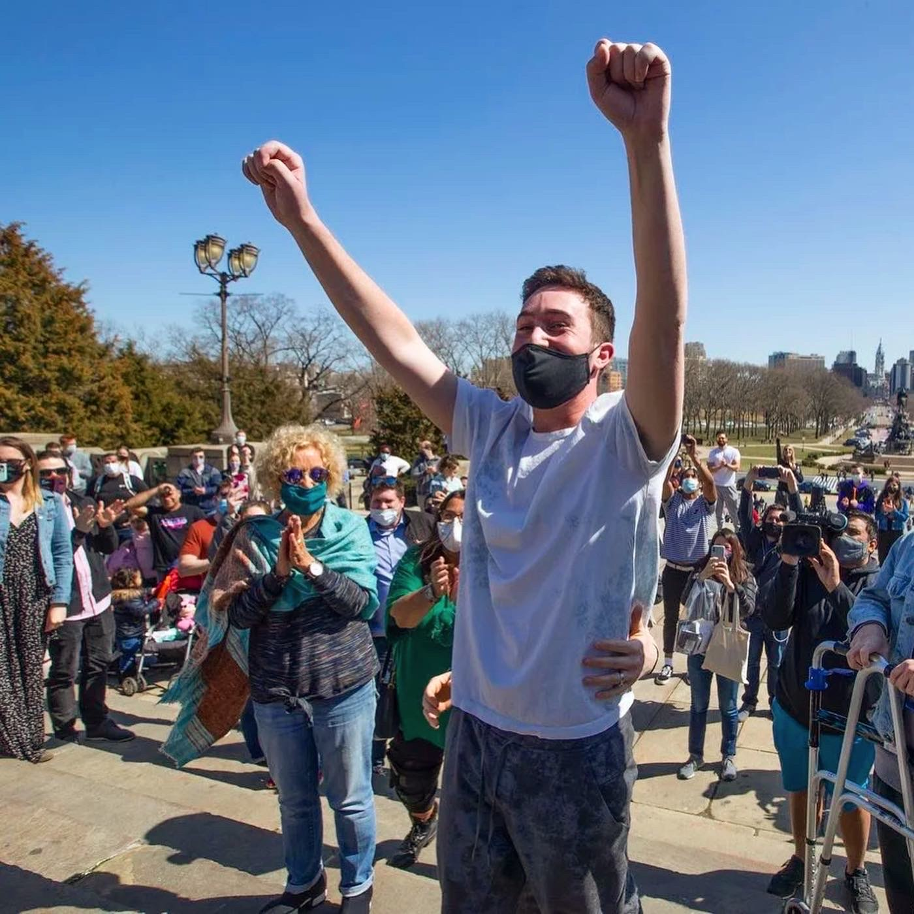
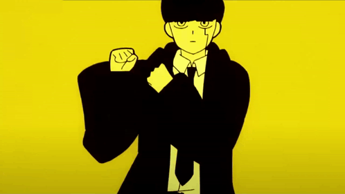

About Chase
Chas Friedman's journey is nothing short of remarkable. Originally hailing from San Diego, he ventured to Whitman College to pursue his passion for tennis, eventually graduating with a degree in Film and Media Studies, coupled with a minor in Chemistry.
His career path led him into the dynamic world of entertainment, where he began at Paradigm Talent Agency, honing his skills before transitioning to Levity Live. There, he specialized in managing stand-up comedians, collaborating with renowned names such as Sebastian Maniscalco, Bert Kreischer, Whitney Cummings, and Taylor Tomlinson, leaving an indelible mark in the industry.
However, fate intervened drastically on New Year's Day in 2021 when Chase faced a life-altering accident, leaving him paralyzed from the neck down. Despite grim prognoses, his resilience and unwavering determination became the catalyst for an extraordinary turnaround. Through relentless dedication and rigorous physical therapy, Chase defied all odds, astonishing doctors by not only walking unassisted after just two months but also reclaiming his place in the workforce within a year.
Yet, this transformative experience instigated a profound introspection within Chase. Realizing the profound shift within himself, he embarked on a quest for a new purpose. Departing from the entertainment realm, he embraced the creative freedom of full-time content creation, delving into social media to explore possibilities for his future.
Amidst this exploration, a new passion emerged: coding. Recognizing the potential for a fulfilling career in this field, Chase committed himself to mastering the craft, currently undergoing intensive training in a coding boot camp to refine his skills and contribute meaningfully to the workforce.
Chase Friedman's story is a testament to resilience, adaptability, and the unwavering pursuit of passion and purpose. From navigating the heights of the entertainment industry to overcoming seemingly insurmountable challenges, Chase embodies the essence of turning adversity into opportunity, inspiring others to embrace change and forge their own paths with courage and determination.
Coding Portfolio
Coding Bootcamp Prework Study Guide
Click the gif to view Chase's Coding BootCamp Prework Study Guide, a project to be built before classes began to prepare. This was Chase's first website.
Bootcamp Code Refactoring

Click the gif to view Chase's first assignment, a project to improve the semantics of a pre-existing website.